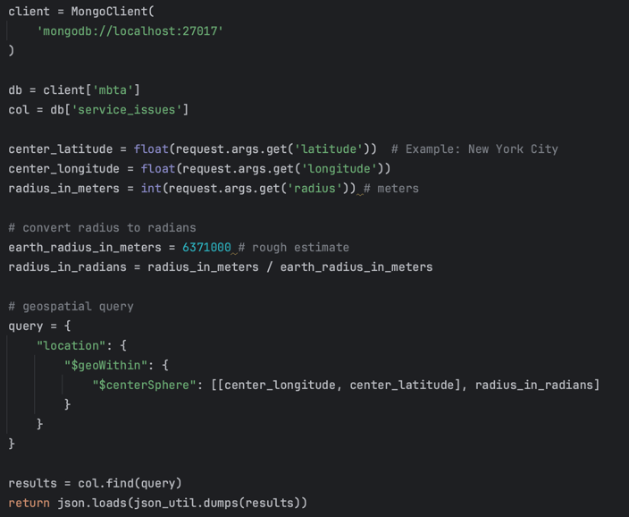

About Me
My Journey
My journey with computer science in general began with my foray into Minecraft modding as my first serious project. Over the years, I’ve learned that I enjoy data science more, and it has become a significant part of my life. Whether it’s serious hackathons, relaxed personal projects, or just solving immediate problems, I find myself constantly inspired by the creativity and innovation in this field.
One of the most rewarding aspects of data science is being able to glean actual results from data with ease. For example, a class project last semester had me derive insights on which factors influenced winrate in League of Legends. This experience taught me that data science can be used in an extremely wide variety of fields.
As a piano player for over 10 years, I am trying to find ways to programmatically generate sheet music. My first attempt last year with less advanced methods had decent results, and I'd like to revisit this as I learn more. In addition, much of my recent work in hackathons has centered around pathfinding with geospatial data.
My Work
This image is part of what I wrote for the backend as part of Lumen, the winning project in the Innovaite 2025 hackathon.
Why I Love Data Science
- It allows me to glean insights from data surrounding real-world problems.
- I enjoy being able to support my opinions with said insights.
- It challenges me to look at data from many different angles.
- It has helped me view topics I am passionate about in a more reasoned way.